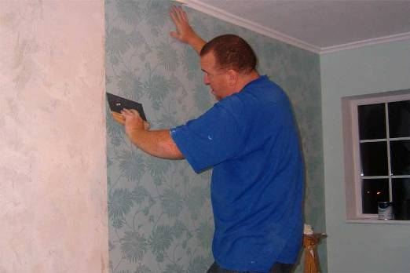

Материалы для отделки потолка
Монтаж натяжного потолка
Если еще не так давно потолки было принято только штукатурить и красить, сегодня повсеместно доступны листовые материалы отделочные и другие высокотехнологичные решения, посредством которых желаемого результата можно добиться быстрее и с меньшими затратами.
На рынке доступны следующие материалы, которые можно применить при обустройстве своего дома:
Сухие строительные смеси с различными добавками для черновой и финишной отделки горизонтальных поверхностей. Такие смеси достаточно эластичны и характеризуются оптимальной адгезией.
Еще одним немаловажным преимуществом специальных смесей является их белый цвет. В итоге, после отделки потолка не придётся тратить деньги и время на покупку и нанесение большого количества белой краски.
Натяжные потолки обеспечивают идеально ровную поверхность за сравнительно небольшую цену. Потолки изготавливаются с применением винилового полотнища, которое монтируется на специальном каркасе, установленном по периметру комнаты.
Виниловое полотнище антистатичное, водонепроницаемое, эластичное, прочное и долговечное. Помимо этого, следует отметить возможность установки потолка с различными фактурами и цветовыми исполнениями.
Отделка гипсокартоном повсеместно распространена, но использование такого материала нецелесообразно в помещениях с низкими потолками. Материал прост в установке и доступен в плане стоимости.
Обои — это широкий перечень изделий рулонного типа. Такие материалы просты в плане монтажа и эксплуатационного обслуживания.
Материалы для отделки стен

На фото — самостоятельная оклейка обоев
Обои представлены на рынке широким спектром ценовых сегментов. Следовательно, можно подобрать изделия, максимально соответствующие не только вашим предпочтениям, но и возможностям.
Помимо материалов рулонного типа на рынке появляется все больший выбор так называемых жидких обоев, которые наносятся на стену и образуют при этом плотную пленку.
Лакокрасочные покрытия — это широкий ассортимент средств органического и неорганического происхождения, которые наносятся на заранее подготовленные поверхности и служат для придания стенам того или иного цвета и фактуры.
Штукатурка — это наиболее популярный способ отделки, повсеместно используемый в течение нескольких столетий. Есть множество разновидностей штукатурки, которые различаются в соответствии с составом раствора, в соответствии со способом нанесения и т.д.
На фото — оштукатуривание стен сухими смесями
Наряду с обычной штукатуркой, все более популярной становится штукатурка декоративная. О ней вы сможете найти подробную информацию в соответствующей статье на нашем портале.